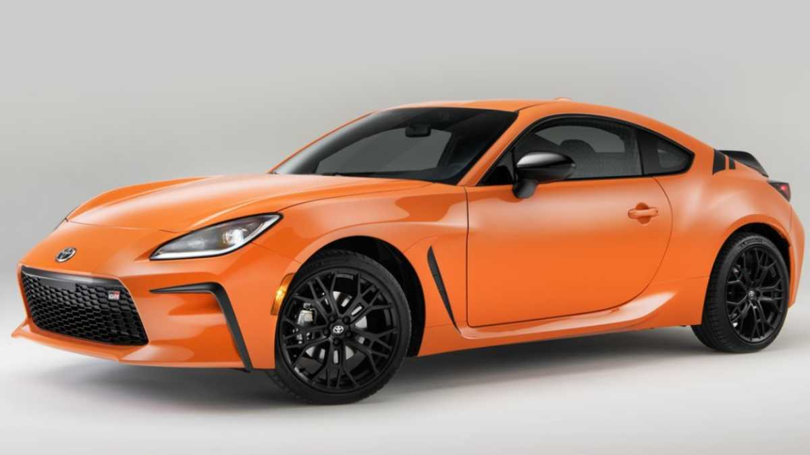

VK CARS
HOME
SPORTS CARS
BUGDET FRIENDLY CARS
LUXURY CARS
BEST SELLING CARS
TOP 3 SPORTS CARS
1. TOYOTA GR86

Over a decade ago in 2012, Toyota ended its sports car hiatus with the launch of the GT86. This affordable, lightweight and rear-wheel-drive model proved fun to drive, but many drivers yearned for more power from the 2.0-litre flat-four ‘Boxer’ engine.
Now, the GR86 has taken over the baton from the GT86 and with a huge number of improvements to the original car’s platform, it’s one of the most entertaining cars to wear a Toyota badge.
Toyota has listened to drivers who wanted more power by boring out the engine to 2.4 litres, resulting in an increased output of 231bhp. Although this still may not sound like much, the whole car weighs only 1,276kg and the engine is keen to rev, so it’s more than capable of delivering those all-important thrills.
This straight-line performance is then combined with a beautifully balanced chassis, highly responsive steering and even upgraded tyres, all of which make the GR86 a truly exciting car to drive on both road and track. Toyota only offers the GR86 in one spec but it includes all the creature comforts a driver could need, allowing your focus to rest on its sublime chassis balance, sharp steering and compliant ride. We like this car so much that it took the crown as our 2023 New Car Awards Coupe of the Year.
2. BMW M2

The BMW M2 is a version of the BMW 2 Series automobile developed by BMW's motorsport division, BMW M GmbH. As the 2 Series replaced the 1 Series coupé and convertible models, the first-generation M2 was marketed as the most basic M model in the range.
The first-generation M2 used the F8x chassis from the M3/M4, codenamed F87 and featured the BMW N55 series engine, while its successors, the M2 Competition and M2 CS, featured a twin-turbocharged engine developed by BMW M GmbH (S55 engine).
3. PORSCHE 718

The Porsche 982 is the internal designation of the fourth generation Boxster/Cayman (third generation Cayman) made by German automobile manufacturer Porsche. With the switch to a new turbocharged flat-four engine the marketing name for the models was changed to Porsche 718, in reference to the 718, which won the Targa Florio race in 1959 and 1960. The name is meant to evoke Porsche's past racing successes with light cars like the 718 that outmanoeuvred competitors with larger and more powerful engines.